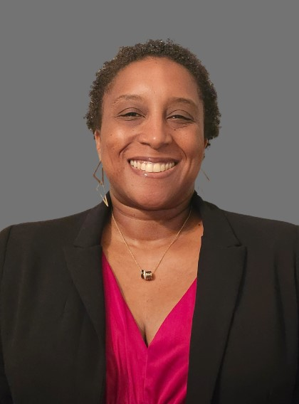

UNC Quality Matters Summit 2025
Empowering Educators: Transforming Teaching through Quality Matters
📅September 26, 2025
🕘9:00 AM - 4:30 PM
📍NCCU Student Center
Welcome Message
Get ready for a day of inspiration, collaboration, and big ideas! This is where educators, innovators, and leaders come together to reimagine what's possible in higher education. Use this app to plan your experience, find your sessions, and make the most of every moment at the summit.
We're so glad you're here! We hope you have a quality learning experience – and a little bit of fun, too.
Meet the Office of e-Learning Staff

Dr. Larrisha McGill-Youngblood
Director
Dr. Charlotte Russell Cox
Associate Director

Dr. Colleen Smith
Instructional Designer
Alanna Cates
Instructional Designer

Kima Ellis
Instructional Designer
OEL Faculty Fellows: 2025-2026

Featured Keynote Speaker

Dr. Racheal Brooks
Director of Quality Assurance Implementation Solutions at Quality Matters
Keynote Time: 12:30 PM - 1:15 PM